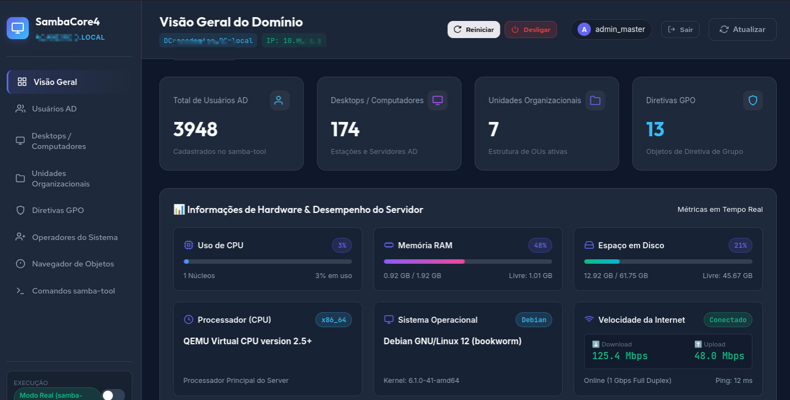

O SambaCore4 é uma interface web intuitiva e moderna projetada para simplificar a administração centralizada de ambientes Active Directory gerenciados pelo Samba 4 (AD DC). O sistema elimina a necessidade de executar comandos complexos no terminal para tarefas rotineiras, fornecendo dashboards visuais para monitoramento do servidor, inteligência preditiva de segurança e controle total de usuários, máquinas, unidades organizacionais (OUs) e diretivas de grupo (GPOs).
admin_masteradmin123
A interface do painel web foi estruturada para proporcionar uma navegação rápida e fluida entre os seus principais módulos operacionais:
Através do painel Visão Geral, a equipe de infraestrutura pode monitorar continuamente a integridade do servidor Debian Linux:
samba-tool.Para simplificar o processo de implantação da plataforma no servidor Debian Samba AD, o projeto conta com o script autosserviço install.sh (ou installsmbc4.sh).
chmod +x installsmbc4.sh
sudo ./installsmbc4.shApós a finalização da execução do script de instalação, é obrigatório realizar a cópia da pasta de arquivos estáticos, dos scripts Python e do módulo de Inteligência Artificial para o diretório de execução da aplicação:
public/ (Contém os arquivos estáticos, CSS, JS e componentes visuais do painel)server.py (Script principal do servidor web e das rotas da API)samba_service.py (Módulo de integração direta com os comandos do Samba 4)ai_detector.py (Módulo de Machine Learning para análise preditiva de ameaças)Exemplo do comando de cópia para o diretório final da aplicação (/opt/sambacore4/):
cp -r public/ /opt/sambacore4/
cp server.py /opt/sambacore4/
cp samba_service.py /opt/sambacore4/
cp ai_detector.py /opt/sambacore4/O SambaCore4 possui um motor de IA Defensiva integrado responsável por analisar o comportamento do domínio em tempo real e prever riscos potenciais de segurança, como ataques de força bruta, sequestro de sessões ou desvio de comportamento operacional.
O motor é alimentado pelo arquivo ai_detector.py e requer as seguintes bibliotecas Python instaladas dentro do ambiente virtual (venv) da aplicação:
scikit-learn: Fornece algoritmos preditivos e modelos de detecção de anomalias.pandas: Responsável pela manipulação e estruturação temporal dos logs do sistema.numpy: Processamento de matrizes e vetores numéricos de risco.A cada execução da varredura (via botão "Executar Varredura" ou agendamento automático), o modelo processa as seguintes métricas do servidor:
| Métrica / Evento | Descrição do Diagnóstico |
|---|---|
| Falhas de Autenticação | Mapeia tentativas incorretas de login via NTLM/Kerberos para identificar padrões de Brute Force ou Password Spraying. |
| Anomalia de Horários | Compara acessos e solicitações de autenticação ocorridas fora do horário comercial com o histórico do domínio. |
| Volumetria de Requisições por IP | Detecta picos anormais de tráfego vindos de uma mesma estação de trabalho ou IP da rede local. |
| Alteração de Contas Privilegiadas | Avalia criações de usuários atípicos, resetes de senha repetidos e bloqueios repentinos de contas corporativas. |
O modelo consolida as anomalias detectadas em uma pontuação normalizada de 0 a 100:
O PostgreSQL é utilizado pela aplicação para armazenar com segurança os logs de auditoria e os acessos dos operadores do painel web.
# Acessar a base de dados da aplicação no PostgreSQL
sudo -u postgres psql -d sambacore4_db| Comando / Query | Função / Descrição |
|---|---|
\dt |
Lista todas as tabelas criadas no banco da aplicação (operadores, logs, sessões). |
\d nome_tabela |
Exibe a estrutura detalhada e colunas de uma tabela específica. |
SELECT * FROM operadores; |
Consulta e exibe todos os operadores com acesso ao painel. |
\q |
Encerra a sessão e sai do prompt do PostgreSQL. |
Por padrão, a instalação automatizada define as seguintes credenciais de banco de dados:
sambacoresambacore4_dbdominus7evendominus7even) para garantir a integridade dos dados e impedir acessos não autorizados.
Execute o comando abaixo no terminal do servidor Linux para modificar a senha do usuário sambacore diretamente no gerenciador do PostgreSQL (substitua SuaNovaSenhaSegura123! pela sua nova senha):
sudo -u postgres psql -c "ALTER USER sambacore WITH PASSWORD 'SuaNovaSenhaSegura123!';"Como a aplicação obtém as credenciais através de variáveis de ambiente gerenciadas pelo systemd, você deve atualizar o arquivo de serviço localizado em /etc/systemd/system/sambacore.service:
1. Abra o arquivo no editor de texto:
sudo nano /etc/systemd/system/sambacore.service2. Localize a linha contendo a variável Environment="DB_PASS=..." e atualize para a nova senha:
# Altere a linha abaixo:
Environment="DB_PASS=dominus7even"
# Para a sua nova senha:
Environment="DB_PASS=SuaNovaSenhaSegura123!"Caso precise reexecutar a instalação ou realizar novos deploys no futuro, atualize a variável DB_PASS dentro do script de instalação:
# Edite o script de instalação
nano installsmbc4.sh
# Altere a linha correspondente:
DB_PASS="SuaNovaSenhaSegura123!"Por fim, recarregue as configurações do daemon systemd e reinicie o serviço da aplicação para aplicar as alterações:
sudo systemctl daemon-reload
sudo systemctl restart sambacore
sudo systemctl status sambacoresudo systemctl stop sambacore # Interrompe o funcionamento do painel
sudo systemctl start sambacore # Inicia o serviço da aplicação
sudo systemctl status sambacore # Exibe o estado atual do serviçoEm cenários de exceção onde a aplicação venha a travar ou prender requisições pendentes, utilize o comando:
sudo killall -9 python3systemctl start sambacore.
A utilização da porta 5000 em HTTP convencional transmite dados administrativos e credenciais corporativas em texto simples pela rede local, o que representa um risco de segurança. Por essa razão, a arquitetura do SambaCore4 desabilita o acesso HTTP na porta 5000 e canaliza todas as requisições para a Porta 8443 com HTTPS criptografado via Proxy Reverso Nginx (SSL/TLS).